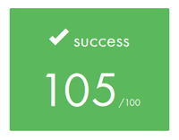

Loading...
Searching...
No Matches
README.md
Score

2024/12/30

How to use
git clone git@github.com:1RO8s/cub3D.git
cd cub3d
make
./cub3D map/test.map
Usefull alias
# set alias command
source config/alias.zsh
# execute './cub3D map/test.cub'
run
# leack
make check
leak_check # or leak_check_all
# abort
make asan
run
# norminette
norm # output to norm_result.txt
# forbidden function
nm_cub # output to nm_cub.txt
nm_obj # output to nm_obj.txt
# ctags for jump function
ctags_cub3d
How to use Tester
# current directory is PROJECT_DIR/cub3d
git clone git@github.com:kamitsui/cub3D_parse_test.git
cd test
# parse check
./parse_check
# run with select map
./run_select_map.sh
# leak check
./leak_check.sh
# output to trace/*.log
Enjoy Makefile
make
cowsay command
About us
- Intra:hnagasak / GitHub:1R08s / Repository
- Intra name : kamitsui / GitHub : kamitsui / Repository
Joined the 42Tokyo in the same year (2023.1)
Start this project at 2024.8